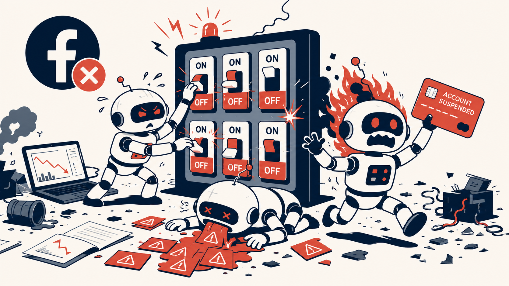
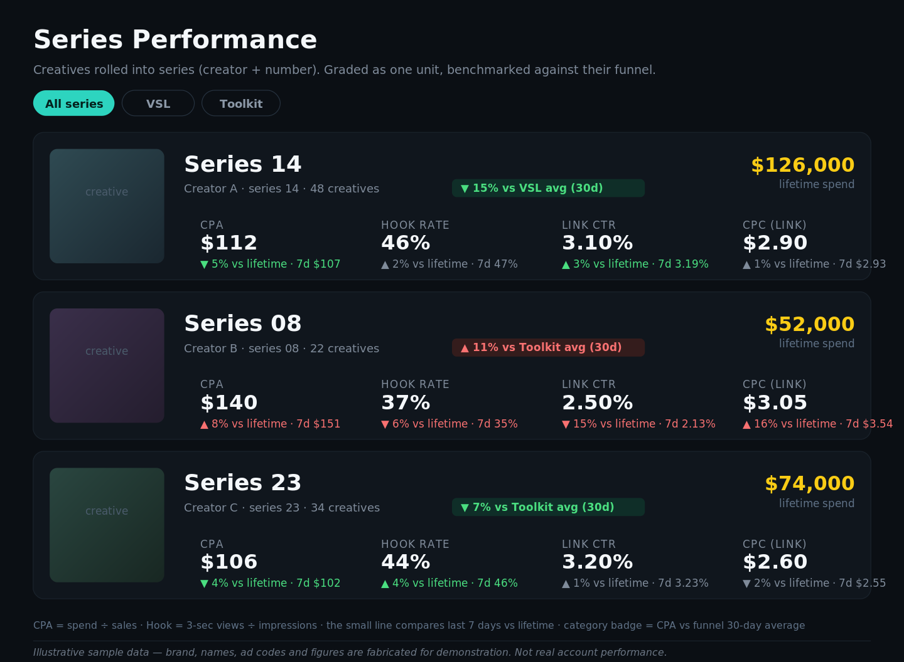
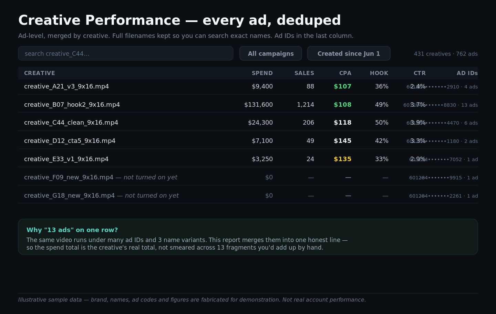
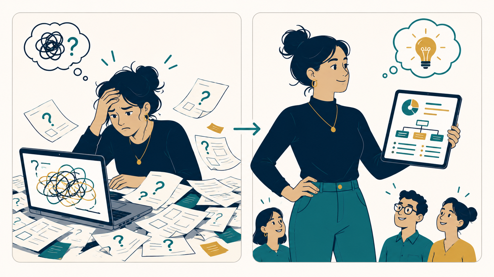
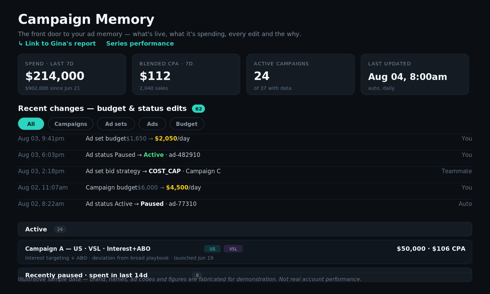

Everyone's chasing AI ad-generators. The real edge is somewhere else entirely.
Everyone in growth is being sold two flavors of AI hype right now. Neither one works for direct response.
❌Hooking your Meta ad account up to Claude or ChatGPT via an MCP and letting it "manage" your ads. Great way to get your account banned 💀. The AI hallucinates, goes off the rails, and over-complicates a task — turning ads on and off — that reliable, purpose-built tools have handled for years. If your growth stack is one bad Claude action away from a Meta suspension 🚫, you don't have a growth stack. You have a wager.
❌"Just dump your ad data into an AI and ask what it thinks." 🙄 I've had countless AI-slop reports 🗑️ thrown at me — my own CEO does this. Sounds smart. Context-free. Might land for an ecommerce store selling one product to one audience. For direct response — where funnel, audience, offer, and naming convention all encode meaning — it simply does not work.

Meanwhile, the actual work — launching creative, throttling what's fatiguing, spotting which concepts are winning, iterating — still has to get done. Neither flavor of AI hype touches that.
✅AI as a builder's tool, not as the operator. I use Claude Code to build the reports that tell me what I really need to know — reports that encode real direct-response experience and the human context an AI dump can't produce.
✅Safer, purpose-built tools for the mechanical work. Turning ads on and off is handled by an FB-approved app that doesn't hallucinate and doesn't get accounts banned.
The difference between the operators who scale in 2026 and the ones who don't isn't whether they use AI. It's how.
The problem, plainly.
You need to launch a lot of creative. Call it 40 new ads a week just to have a shot.
You can't:
Throw spaghetti 🍝 and let Advantage+ figure it out. That burns budget 💸 while your CPA drifts, and you never learn what worked, or why. 🤷
Analyze every ad by hand in Ads Manager. That burns your eyeballs 👀🔥, misses fatigue as it happens, and loses history the moment you pause something.
You need something in the middle. Something that watches everything, groups it the way you actually think about it, and hands you the three ads to double down on and the three to kill. This morning. Not next week.
That's a system. Not a dashboard. Not a creative analytics platform. A system.
What you actually get
🚀 Unlimited creatives. Unlimited funnels. The volume ceiling disappears — you're not throttled by how many campaigns your operator can hold in their head.
🎯 Actionable insights, systematically. Not vibes-based, not spaghetti-based, not eyeball-based.
😌 You're not stressing 24/7. The ad-level on/off automation reliably throttles individual creatives against their limits — so you're not sitting in Ads Manager toggling ads at 11pm on a Sunday 🛌. When something needs a human, it surfaces.
🧠 Your time goes to strategy, creative, and calls. Everything mechanical is running.
No more pulling your hair out. 🙌
The 2026 cheatsheet — what a real system does.
Everything below runs against ~$1M/month in Meta spend on a health & wellness info-product brand I took over in May. CPA is down ~40% in eight weeks. The system is the reason.
The scaffolding
Ad-level on/off automation via an FB-approved app most media buyers don't have access to. Watches every ad in the account every 30 minutes ⏱️. Kills fatigued losers. Scales stat-sig winners. Refills the testing hopper from paused candidates. No rules to write. No 3 a.m. panic refreshes 😴. Plug in a CPA target and walk away. Battle-tested on $60M+ of spend before I got my hands on it; I've personally run another $2M through it. Kills require both a lifetime-spend floor and a verdict from the trajectory model — no false positives. Testing and scaling live in the same structure per funnel × geography, so creative decisions compound instead of fragmenting across dozens of campaigns. This is what "unlimited creatives, unlimited funnels" actually looks like in production — and it's the opposite of plugging Claude into your ad account via MCP and praying. Access to this tool is part of the edge. You don't find it in a Google search.
Naming convention with segment codes for hook, body, and CTA. Sounds pedantic. Isn't. It's the key that unlocks everything downstream — without it you can't group creatives sensibly, can't run trend analysis, can't join to your creative library. If your current setup can't tell you which hooks are working across concepts, this is why.
Direct pull from the Meta Marketing API into a private data store. Not "we scrape your dashboard." Real API pulls, deduplicated properly.
A memory layer that logs every budget and status change with timestamp and actor. When you sit down Monday and can't remember what you touched Thursday, this is what saves you.
Curious which app I use?
Fewer than a dozen media buyers on the planet are using it. It's not on the front page of a Google search, it's not something you can just sign up for, and the operators who do have it don't advertise that they do. Connect with me on LinkedIn and I'll tell you what it is, how I got in, and how I have it configured.
1. Series performance. Every creative rolled into a series by creator + batch. Thumbnails. Spend, CPM, CTR, CPC, CPA. 7-day-vs-lifetime trend indicators on every metric. A badge on each series benchmarking it against its funnel's own 30-day average.
This is where you catch a series fatiguing before it drags the account down — the piece no tool I've tried does reliably. Trend confidence is the whole game, and it's not something you can fake with an AI wrapper on top of standard Marketing API endpoints.

Series Performance — creatives grouped by batch, trend indicators on every metric, benchmarked against each funnel's own 30-day average.
2. Creative report. Ad-level view for the creative director. Every ad they've launched — even ones sitting at $0 that haven't been turned on yet. Deduped so one video = one line, not fifteen fragments. Full filenames preserved so they can search their own work.

Creative Report — ad-level view for the creative director. Every ad deduped to one honest row, full filenames preserved, FB Ad IDs in the last column.

Why creative directors love it
"For the first time, I actually know what happened with each batch — which elements are working, without the noise. I know exactly what to tell my editors on Monday. Dream come true. ✨"
— Gina, Creative Director
3. Weekly performance. Funnel × geography, week-over-week, in a palette calibrated for showing upward. Auto-pulls every Monday for the prior Sun-to-Sun. Frozen-URL snapshots for internal sharing. The exec sees one honest number in a format that doesn't create friction.
4. Campaign memory. Change log + account pulse + strategy notes on every campaign. The thing you wish you had every time somebody asks "why did we pause that one?"

Campaign Memory — every budget and status change with timestamp and actor, filterable by campaign / ad set / ad / budget. Account pulse in the header.
The whole system is queryable ad-hoc — because it's real data in real storage, "top ten Toolkit ads with CPA under $140 and their download links" is one prompt away. The Airtable connection means query results come back with the actual video files. From "here's the top ad" to "here's the file to remix" in one step.
📈 The credential.
💰$1M/month managed on Meta.
📉~40% CPA reduction in eight weeks.
🎯Hit a target the previous team called unreachable at the account's current maturity.
Trajectory below is real — shape, dates, and magnitude are as they happened. Y-axis values are hidden for public sharing. 👇
Cost per purchase, blended across both ad accounts, May 20 – Jul 19, 2026 · y-axis values omitted for public sharing.
$1MMonthly spend
~40%CPA reduction
8 weeksto floor
The system did the compounding. I made the strategic calls it fed. The two are inseparable — you can't do this scale of volume by taste alone 🎨, and you can't do it by tools alone ⚙️. You need the operator and the system. 🤝
Hire me. Fire your junior media buyers. 🔥
Real talk — junior media buyers are useless to me 🙄, and increasingly they should be useless to you.
Here's the stack that replaces them 👇
📋Spreadsheet-based ad launcher. Every ad, every naming code, every UTM, every budget — launched exactly as spec'd, the first time, every time. Zero human-typo mistakes. 100% perfect execution. ✨
🤖Ad-level optimization app. Turns individual ads on and off at scale. Watches every 30 minutes. Kills fatigued losers 💀. Refills the testing hopper 🔄. Nobody sitting in Ads Manager 12 hours a day.
🔒Both FB-approved services from real dev teams. Battle-tested at seven-figure spend. No gambling with untested software on your ad account. What I bring is knowing which tools are worth paying for, having access to the ones you can't just sign up for 🎫, and knowing how to configure them for a direct-response account. 🎯
Add those together and there's nothing left for a junior to do that isn't done better, cheaper, and more reliably by the stack. 🤷
💡 You don't need three juniors and a media buyer. You need one operator with the right tooling.
💭 Why I'm telling you this.
Most media buyers I know are still running everything through Ads Manager screenshots and Kitchn exports — paying $500–2,000/month for the privilege 🙄💸. And most Head-of-Growth conversations I have go the same way — the person on the other side either:
🤷 Doesn't know a system like this is possible, or
😰 Thinks it requires a data team to build.
It doesn't. 🙌 Here's how the stack actually splits:
🧠Reporting + analysis layer — I built it myself with Claude Code, the Meta Marketing API, and Airtable. Python. SQLite. Docker. Runs on a $6/mo VPS. Cron regenerates reports while I sleep 😴. Read-only — pulls data, analyzes, publishes reports. Nothing my code writes ever touches your ad account. 🔐
⚙️Launcher + optimization — paid FB-approved services built by real dev teams. Not something I'd DIY with an AI wrapper and cross my fingers on a seven-figure account. 🚫
My time goes to strategy, creative, and calls 📞 — not to Ads Manager, and not to babysitting some MCP-connected AI hoping it doesn't get my account banned. ✨
👀 Are interest campaigns on FB really dead?
Everyone says yes. My data says something more interesting. Message me and I'll tell you what I'm actually seeing at seven-figure spend.
🚀 Want a version of this system running in your account?
Message me on LinkedIn. I'll send you the exact Claude Code prompt I use to bootstrap the whole reporting stack against your own naming convention. A couple hours of work if you follow it, and you'll have a private version of everything above running against your own data. ⏱️
The brand I'm running now is capped by its own back-end economics, not by the media buying. I'm looking for a program where the ceiling is farther up. 📈 If that's your account — talk to me.